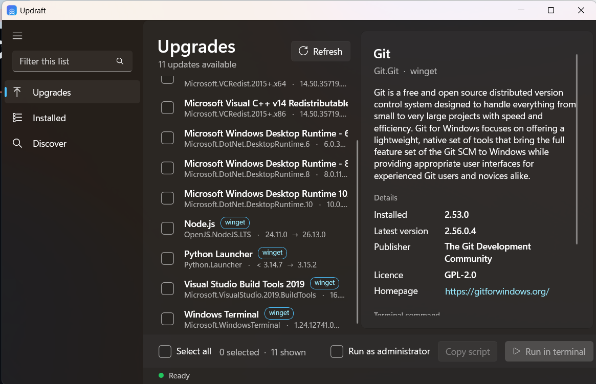

Git.Git2.53.0→ 2.56.0.4· 11 more waiting
Update your Windows apps from one list.
Updraft reads winget upgrade for you. Tick the apps you want, then copy the commands or let Updraft run them in a terminal.

What it replaces
The same winget, without retyping package ids.
Updraft does not reimplement anything. It runs the winget you already have and turns the table into something you can click.
You read thiswinget upgrade
Updraft writes thisfor the rows you ticked
Features
One window, one job.
Everything below is in v0.1. The roadmap lives in the README.
- Scans on launch
- Lists every app with a newer version, installed and available side by side.
- You choose what updates
- Tick apps one by one or select all. Filter the list as you type. Nothing runs until you press the button.
- Copy the script
- Gets the exact
wingetcommands for your selection, ready to paste into any terminal. - Run in terminal
- Opens Windows Terminal and installs the selection one after another. Optional “Run as administrator”.
- Installed and Discover
- Browse what is on the PC, or search the whole winget catalogue and install something new.
- Details pane
- Description, publisher, licence and homepage for the selected package, from
winget show. - Native WinUI 3
- Fluent controls, Mica backdrop, follows your light or dark theme. Builds for x64 and ARM64.
- Stays local
- No account, no telemetry, no network calls of its own. It only talks to your winget.
Try it
Build a script by clicking.
A mock of the app with sample data. Click rows and watch the command list change. Nothing is installed.
Upgrades
Git
Distributed version control system.
Sample data. Only Git, Node.js and Python Launcher versions are real.
Download
Pick the build for your processor.
The installer sets up for your user without an admin prompt. The zip is portable. Both bundle the .NET runtime and Windows App SDK.
| Platform | Installer | Portable |
|---|---|---|
| Windows x64Intel, AMD | Updraft-win-x64-setup.exe61 MB | Updraft-win-x64.zip89 MB |
| Windows on ARMSnapdragon X, Surface Pro X | Updraft-win-arm64-setup.exe58 MB | Updraft-win-arm64.zip86 MB |
Requires Windows 10 1809 or newer with winget, which is built into Windows 11. Check with winget --version.
Builds come from GitHub Actions, with SHA-256 checksums on the release page and build-provenance attestations. They are not code-signed yet, so SmartScreen may ask you to choose More info, then Run anyway.
FAQ
Before you install.
Does Updraft send data anywhere?
No. It has no telemetry, accounts or network calls of its own. It runs your local winget, which contacts the winget sources as usual.
Do I need winget installed?
Yes. It ships with Windows 11 and recent Windows 10 as App Installer.
Why is the download around 60 MB?
The .NET runtime and Windows App SDK are bundled so nothing else has to be installed. A smaller build is on the roadmap.
Is it affiliated with Microsoft?
No. It is an independent open-source project. Windows and winget are trademarks of Microsoft.
Can I contribute?
Yes. Read CONTRIBUTING.md, then open an issue or a pull request.